GC content and annotation tracks
Source:vignettes/articles/annotation-tracks.Rmd
annotation-tracks.RmdAdd a GC-content strip to any synteny plot with
p + syn_track(values). The same table works in linear and
circular views. Choose geom = "heatmap",
"line", or "bar", and combine them with
+. The underlying gene and ribbon colors keep their own
meaning. All drawing uses ggplot2 layers.
A complete gene example
These bundled DNA strings are simulated. They demonstrate the calculation and alignment; their GC values are not measurements of real organisms.
example_dir <- system.file("extdata", "gc-tracks", package = "ggsynteny")
read_example <- function(name) {
readr::read_tsv(file.path(example_dir, paste0(name, ".tsv")), show_col_types = FALSE)
}
features <- read_example("features")
links <- read_example("links")
dna <- read_example("sequences")
gene_gc <- gc_content(dna, intervals = features)
p <- plot_microsynteny(features, links, palette = "casa_natal",
ribbon_fill = "per_name")
p + syn_track(gene_gc) + ggplot2::labs(title = "GC content per gene: simulated DNA")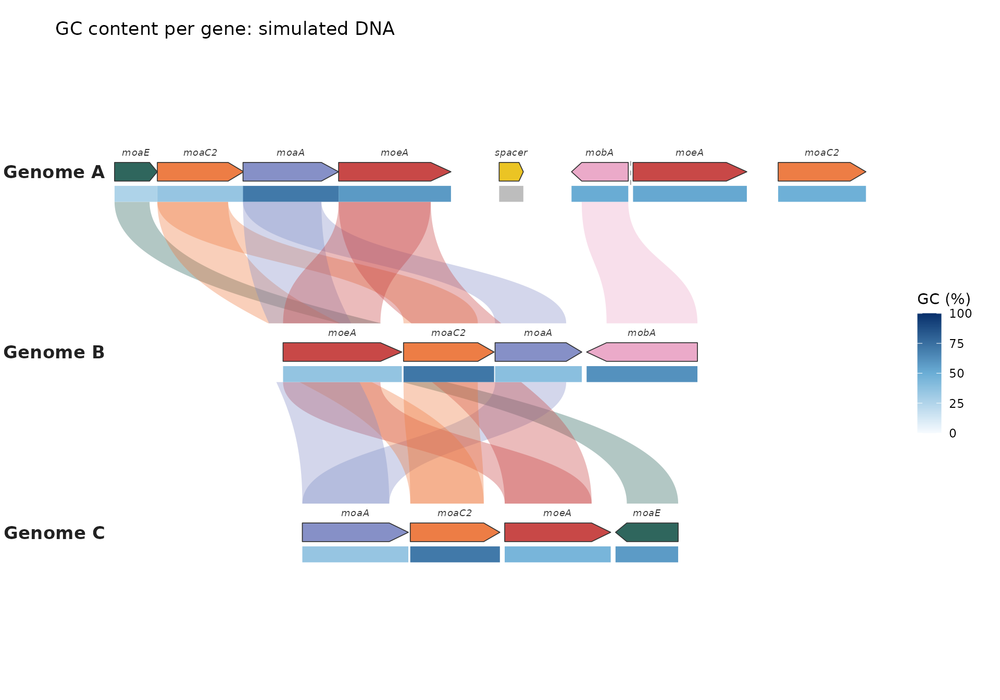
plot_circular_microsynteny(features, links, palette = "casa_natal",
ribbon_fill = "per_name") +
syn_track(gene_gc) + ggplot2::labs(title = "The same GC values around a circle")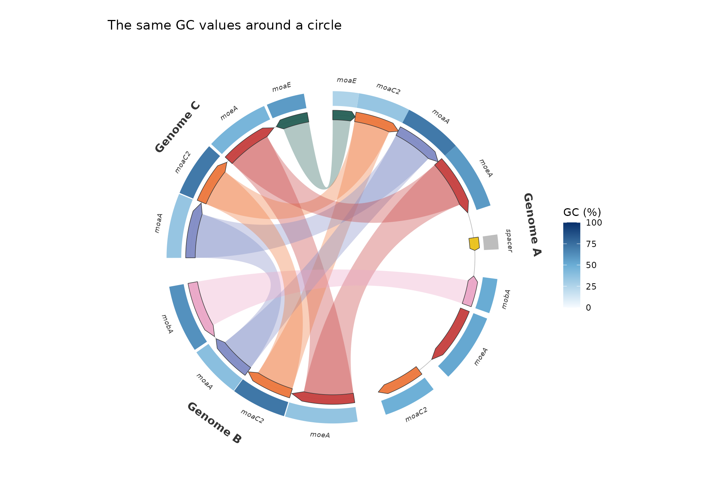
GC is the percentage of called bases that are G or C:
100 * (G + C) / (A + C + G + T). Ambiguous bases such as
N are left out of the denominator. n_called
and n_ambiguous let you assess how much sequence supports
each value. An interval with no called bases has NA, drawn
grey. Missing intervals remain gaps. Neither is treated as zero.
Chromosome windows
syn <- list(chromosomes = read_example("chromosomes"), blocks = read_example("blocks"))
window_gc <- gc_content(dna, window = 250)
plot_synteny(syn, unique(syn$chromosomes$species), palette = "casa_natal") +
syn_track(window_gc, name = "GC (%) / 250 bp") +
ggplot2::theme(plot.margin = ggplot2::margin(10, 30, 10, 100))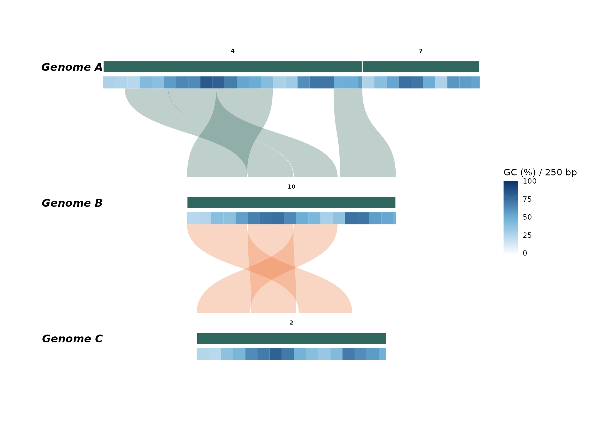
plot_circular_synteny(syn, palette = "casa_natal") +
syn_track(window_gc, name = "GC (%) / 250 bp")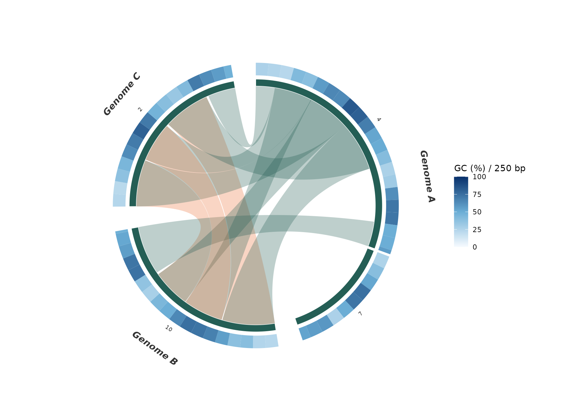
The final window is shortened at a sequence end. Set
step smaller than window to calculate sliding
windows. Their intervals overlap; tiles draw in input order, with later
rows on top. For an unambiguous heatmap, use non-overlapping windows or
reduce overlapping measurements to disjoint bins before plotting. A line
track instead plots the value at each window center, so overlapping
sliding windows can be displayed directly. Intervals crossing a circular
origin must first be split; the calculator does not wrap windows around
the origin.
Supplying your own measurements
The common table has five columns:
| Column | Meaning |
|---|---|
group |
Species in chromosome plots; bin/genome in gene plots |
seq_id |
Chromosome or contig identifier within that group |
start, end
|
Interval boundaries in the plot’s coordinate system |
value |
Numeric measurement; GC uses percentages from 0 to 100 |
Existing species/chr and
bin_id/seq_id columns also work. Gene feature
tables can be passed directly after adding a value column.
Rows for groups not shown in the plot are omitted with a warning.
Unknown sequences within a displayed group and intervals outside
displayed bounds cause an error. Gene plots only display each contig’s
first-to-last feature span; restrict window tables to those bounds
before adding them.
gc_content() reads character DNA strings, with sequence
coordinate zero at the first base. Its intervals use zero-based,
half-open base-pair coordinates:
start = 0, end = 4 selects bases 1 through 4. Convert
one-based inclusive gene annotations by subtracting 1 from
start and leaving end unchanged. If a
chromosome plot uses kb or Mb, convert the calculated interval
coordinates to that unit before plotting. GC values cannot be obtained
from synteny links, block ranks, or gene positions alone.
For unavailable sequence, supply NA_character_ in
sequence and explicit intervals. Missing sequence
identifiers are errors. Sequences with no length cannot be used to
create windows. Lowercase and whitespace are accepted; gaps and non-DNA
characters are rejected. Reverse-complementing a gene does not change
its GC content.
Multiple tracks and custom colors
The first addition is closest to the chromosome or gene row. Later additions stack below linear genes or outward around a circle, with their own legends. Linear rows expand automatically; ribbons occupy separate gaps, and gene labels sit above the genes. Links skipping a row are split across the gaps, never drawn through intervening tracks. Circular labels move outward as before.
sliding_gc <- gc_content(dna, window = 400, step = 100)
ambiguous <- gc_content(dna, window = 100)
ambiguous$value <- 100 * ambiguous$n_ambiguous / (ambiguous$end - ambiguous$start)
tracks <- list(
syn_track(gene_gc, geom = "heatmap", name = "Gene GC (%)", height = 0.055),
syn_track(sliding_gc, geom = "line", name = "Window GC (%)",
height = 0.19, gap = 0.025, colour = "#176D81", reference = 50),
syn_track(ambiguous, geom = "bar", name = "Ambiguous bases (%)",
height = 0.11, gap = 0.025, colour = "#BE7442")
)
plot_microsynteny(features, links, palette = "casa_natal", label_genes = FALSE) + tracks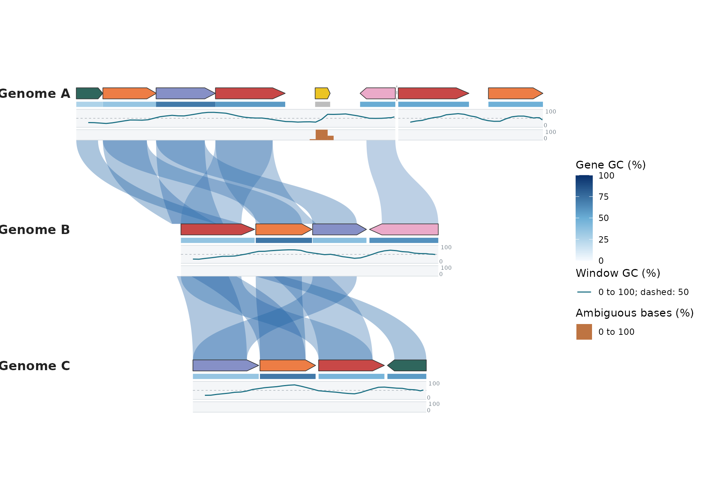
plot_circular_microsynteny(features, links, palette = "casa_natal", label_genes = FALSE) + tracks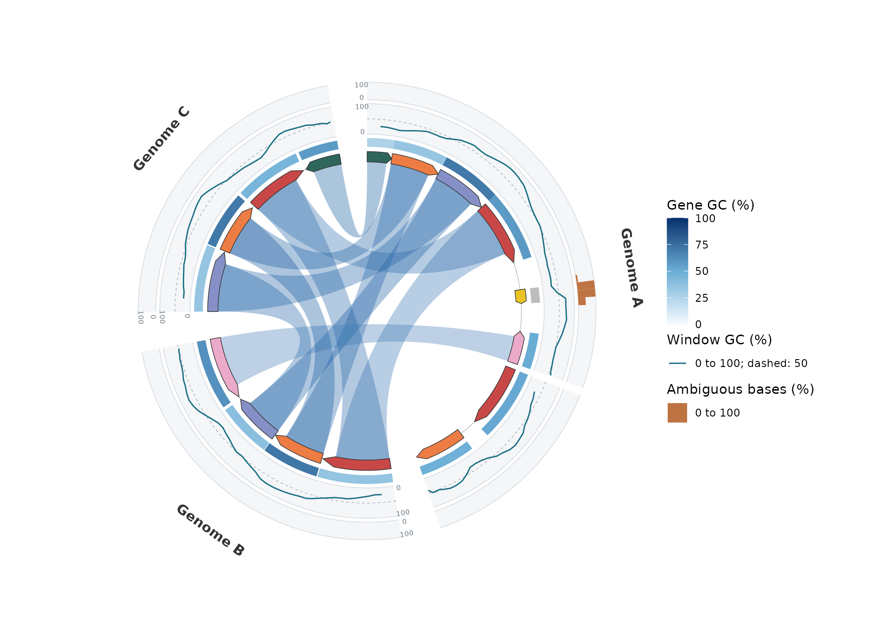
Each track owns its value range, set through limits.
Lines and bars increase upward in a linear plot and outward in a
circular plot. The edge labels show the lower and upper limits.
reference adds a dashed guide at a chosen value. Use
axis = FALSE to hide the edge labels and
show.legend = FALSE to hide the track’s legend.
colour sets line/bar color; linewidth sets
line thickness. Heatmap colors still use palette and
scale_fill_syn_heatmap().
Set reference = NULL to remove the middle guide. Style
each part with native ggplot2 elements, independently of the other
tracks:
p + syn_track(gene_gc, geom = "line", colour = "#176D81", reference = NULL,
background = ggplot2::element_rect(fill = "ivory", colour = NA),
border = ggplot2::element_line(colour = "#BACACD", linewidth = 0.3))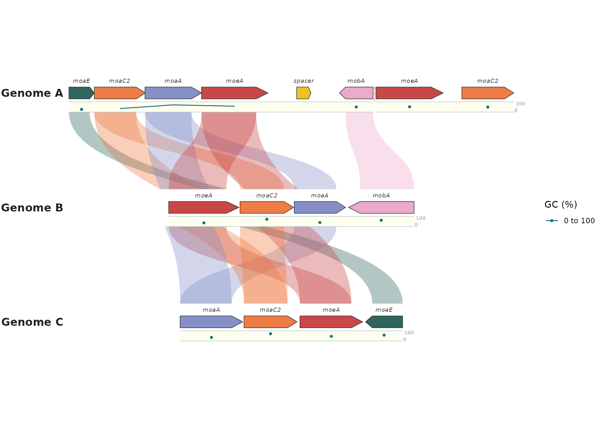
background = element_blank() removes the background;
border = element_blank() removes boundary lines. To change
a visible guide, supply reference = 50 and
reference_line = element_line(colour = "grey60", linetype = "dotted").
The background rectangle can also carry a full outline through its
colour. These styles are translated into ordinary ggplot2
polygon and path layers; plots remain editable ggplot objects, not
images or separate drawing systems.
Lines sort window centers within each contig, with breaks at missing values, uncovered gaps and contig boundaries. A lone value appears as a point. Window centers must be distinct within a contig. Circular lines interpolate genomic position and value before drawing, so sparse points follow the ring; they do not connect across the circle’s origin. No smoothing or new GC estimates are applied. Changing window width or step changes the summaries being plotted.
Bars span each interval and start at baseline, which
defaults to the lower limit. For a signed measurement, use
e.g. limits = c(-1, 1), baseline = 0. Missing bars leave
gaps; missing heatmap values use na.value. Tracks with only
missing line/bar values retain the empty lane and axes, with no data key
in the legend. Bars and heatmaps draw overlapping intervals in input
order.
You can also stack two heatmaps:
uncalled <- gene_gc
uncalled$value <- 100 * uncalled$n_ambiguous / (uncalled$end - uncalled$start)
p + syn_track(gene_gc, name = "GC (%)") +
syn_track(uncalled, name = "Ambiguous bases (%)", palette = c("#FFF7EC", "#7F0000"))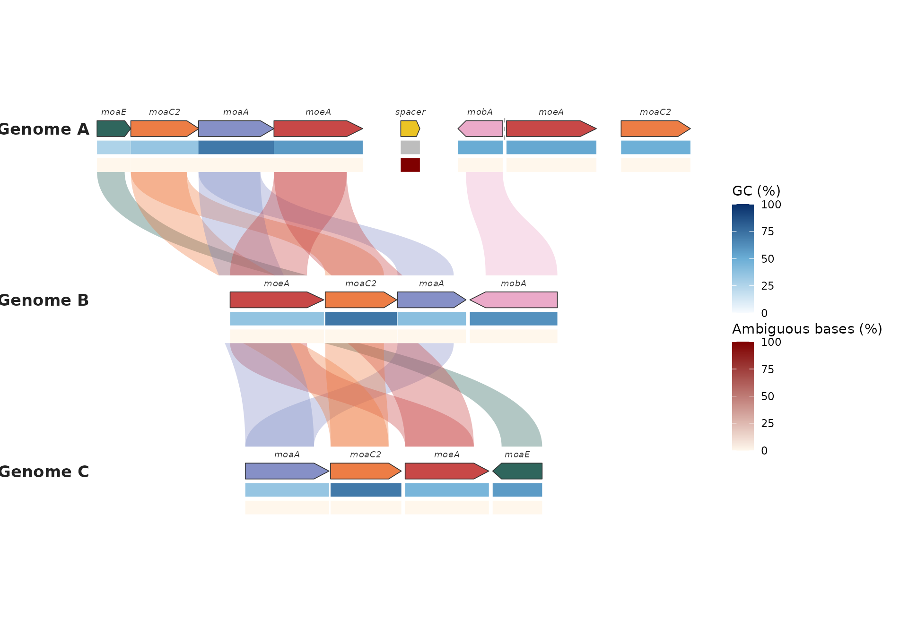
height and gap are fractions of linear row
spacing or the original circle radius. Linear rows expand automatically;
reduce these fractions for a more compact plot. Use limits
and name for other numeric measurements, for example
syn_track(coverage, name = "Depth", limits = c(0, 200)).
p + syn_track(gene_gc) +
scale_fill_syn_heatmap(track = 1, palette = "casa_natal", breaks = c(0, 50, 100)) +
ggplot2::theme(legend.position = "bottom")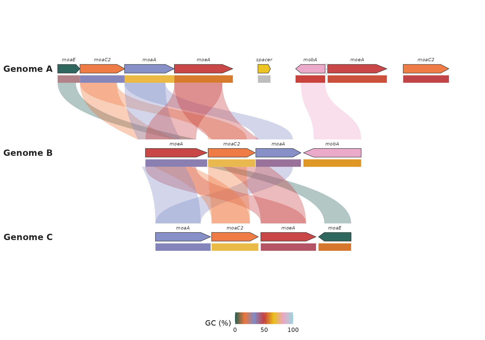
The ordinary ggplot2 scale-replacement message is expected when
replacing a track scale. Numeric limits stay shared across all groups,
making colors comparable. na.value changes the color for
explicitly missing measurements.
Add tracks before replacing coordinates. Faceting and coordinate transforms are not supported for track placement. All track types are static even on interactive plots; existing gene and ribbon hover information still works. Studio does not yet provide a track upload control.
Feature tracks, coordinate axes and a genome ring
A track is a table of intervals plus a geom saying how
to draw what each interval carries. Numeric tracks cover measurements;
genes, regions and other annotated intervals are categories. One wrapper
per geom lists only the options that geom uses:
| Wrapper | Draws | Reads from data
|
Key options |
|---|---|---|---|
syn_track_feature() |
boxes coloured by a category |
start, end, the fill column;
optional label, strand
|
fill, palette,
strand = "split" or "arrow",
label, colour, alpha
|
syn_track_heatmap() |
one colour tile per interval |
start, end, numeric
value
|
limits, palette,
na.value
|
syn_track_line() |
a line through interval midpoints | same |
limits, reference, colour,
linewidth, axis
|
syn_track_bar() |
a bar from baseline over each interval |
same |
limits, baseline, reference,
colour, axis
|
Every wrapper also takes name (legend title),
height and gap (lane size),
show.legend, background and
border, position and
out_of_bounds. syn_track() itself accepts them
all and picks the geom from the table when geom is not
given: a value column means a heatmap, anything else a
feature track. syn_axis() adds tick marks and position
labels. In circular plots any of them can go
position = "inside" the chromosome band, where the ribbons
shrink to make room. Intervals running past a sequence end (the last GC
window, a gene crossing a boundary) are rejected unless
out_of_bounds = "clip" or "drop". When the
plot shows one species or one sequence, the track tables need no
species/chr columns; the keys are filled in
from the plot.
The package bundles the published Arabidopsis thaliana
chloroplast annotation (RefSeq NC_000932.1, 154,478 bp; see
system.file("extdata", "chloroplast", "README.md", package = "ggsynteny")).
A whole genome ring is one sector with everything in its own
coordinates:
dir <- system.file("extdata", "chloroplast", package = "ggsynteny")
regions <- read.csv(file.path(dir, "regions.csv"))
genes <- read.csv(file.path(dir, "genes.csv"))
windows <- read.csv(file.path(dir, "gc_windows.csv"))
pairs <- read.csv(file.path(dir, "ir_pairs.csv"))
syn <- list(chromosomes = data.frame(species = "Arabidopsis thaliana", chr = "plastid", size = 154478),
blocks = data.frame(species1 = "Arabidopsis thaliana", chr1 = "plastid", start1 = pairs$b_start,
end1 = pairs$b_end, species2 = "Arabidopsis thaliana", chr2 = "plastid",
start2 = pairs$a_start, end2 = pairs$a_end, class = pairs$class))
gc <- data.frame(start = windows$start, end = windows$start + 999, value = 100 * windows$gc)
skew <- data.frame(start = windows$start, end = windows$start + 999, value = windows$skew)
pal_class <- c("Photosystems and electron transport" = "#009E73", "ATP synthase" = "#E69F00",
"NADH dehydrogenase" = "#CC79A7", "Ribosomal proteins" = "#0072B2",
"tRNA and rRNA" = "#D55E00", "Other genes" = "#9A9A9A")
pal_region <- c(LSC = "#E9DCC4", IRb = "#7FB3B8", SSC = "#C9B79C", IRa = "#7FB3B8")
plot_circular_synteny(syn, ribbon_fill = "class", ribbon_palette = pal_class, ribbon_alpha = 0.55,
ribbon_legend = FALSE, chr_palette = "#F1EDE6", chr_color = NA,
track_width = 0.02, label_size = 0, species_label_size = 0, group_gap = 1.5) +
syn_track_feature(regions, fill = "region", label = "region", palette = pal_region,
height = 0.07, gap = 0, show.legend = FALSE, label_size = 3.2) +
syn_axis(by = 10000, unit = "kb", gap = 0) +
syn_track_feature(genes, fill = "class", strand = "split", palette = pal_class,
name = "Gene function", position = "inside", height = 0.14, gap = 0.015,
out_of_bounds = "clip") +
syn_track_line(gc, name = "GC (%)", limits = c(20, 60), reference = 36.3, colour = "#3B1B36",
position = "inside", height = 0.15, gap = 0.02, out_of_bounds = "clip") +
syn_track_heatmap(skew, name = "GC skew", limits = c(-0.25, 0.25),
palette = c("#B2182B", "#F7F7F7", "#2166AC"),
position = "inside", height = 0.05, gap = 0.015, out_of_bounds = "clip") +
ggplot2::theme(legend.position = "bottom", legend.box = "vertical") +
ggplot2::guides(syn_feature3 = ggplot2::guide_legend(nrow = 2))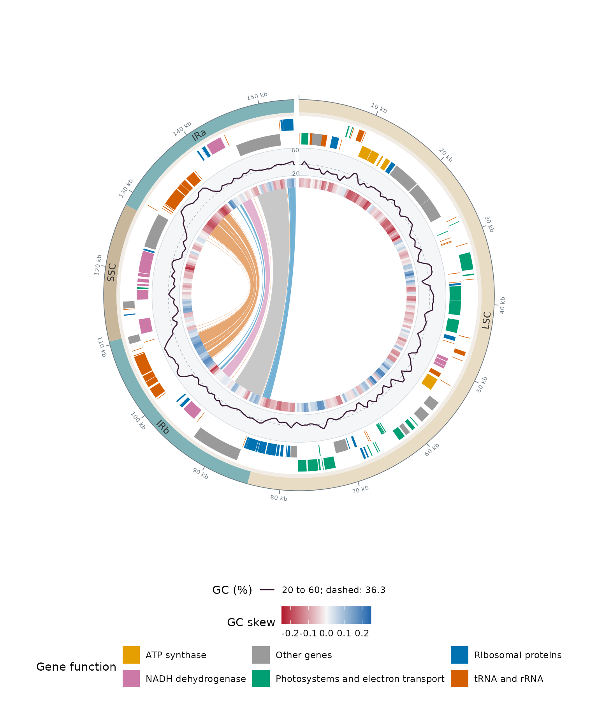
Reading from the outside: the four regions with ticks every 10 kb,
genes on the + strand (outer half) and -
strand (inner half) coloured by function, GC content in 1-kb windows on
a fixed 20–60% scale with the genome mean dashed, GC skew per window as
a diverging heatmap (the sign flips where replication changes
direction), and 17 ribbons joining each gene of IRb to its copy in IRa,
coloured by the class column of blocks. Ribbon
width follows gene length. Every ring is an ordinary ggplot2 layer; the
guide name syn_feature3 is the private fill aesthetic of
the third track added.
Chromosomes keep their default order unless you say otherwise:
chr_order = "input" follows the chromosomes
rows, a character vector or a list named by species gives an explicit
order, and a factor chr column uses its levels.
The same additions work in the linear and gene views. Here
strand = "arrow" draws gene arrows coloured by a class
derived from the simulated sequence:
window_gc <- gc_content(dna, window = 300, step = 100)
gene_gc$gc_class <- ifelse(is.na(gene_gc$value), "No called bases",
ifelse(gene_gc$value >= 50, "GC-rich gene", "AT-rich gene"))
additions <- list(
syn_track_feature(gene_gc, fill = "gc_class", strand = "arrow", name = "Gene class",
palette = c("GC-rich gene" = "#176D81", "AT-rich gene" = "#D9A441",
"No called bases" = "#C8CDD2"), height = 0.07),
syn_axis(by = 1000, unit = "kb", height = 0.05),
syn_track_line(window_gc, name = "Window GC (%)", height = 0.16, reference = 50))
plot_microsynteny(features, links, gene_fill = "uniform", gene_palette = "#B8C2CC",
ribbon_fill = "per_name", palette = "casa_natal", label_genes = FALSE) + additions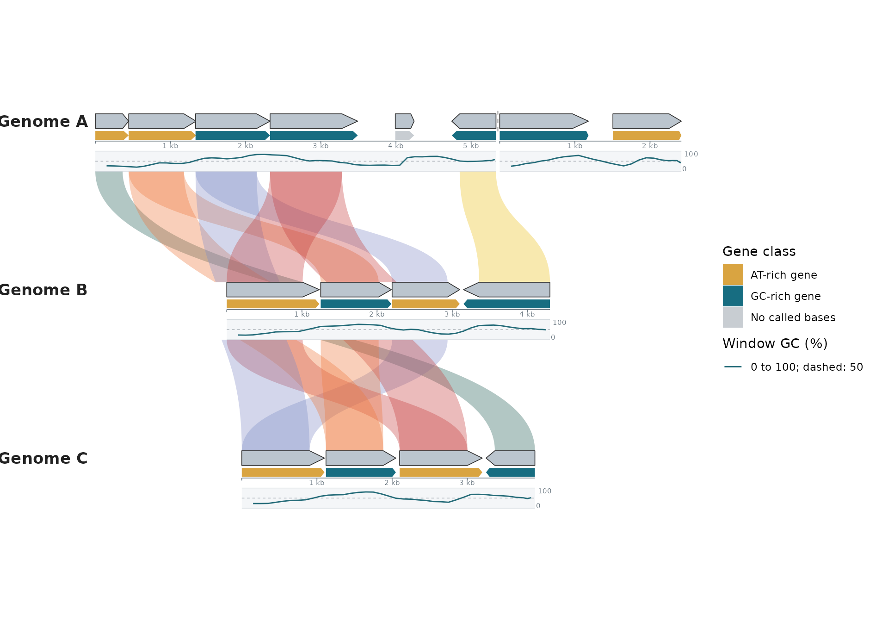
To place something the built-in tracks do not cover, ask the plot for
its geometry. syn_layout() returns the sectors with their
angles (or x/y positions) and the radii already used by tracks;
syn_project() turns genomic positions into plot
coordinates:
p <- plot_circular_synteny(syn, ribbon_fill = "class", ribbon_palette = pal_class, label_size = 0)
syn_layout(p)$sectors## group seq_id start end theta_start theta_end
## 1 Arabidopsis thaliana plastid 0 154478 1.570796 -4.537856
origin <- syn_project(p, "Arabidopsis thaliana", "plastid", 1, offset = 1.08)
p + ggplot2::annotate("text", x = origin$x, y = origin$y, label = "position 1", size = 3)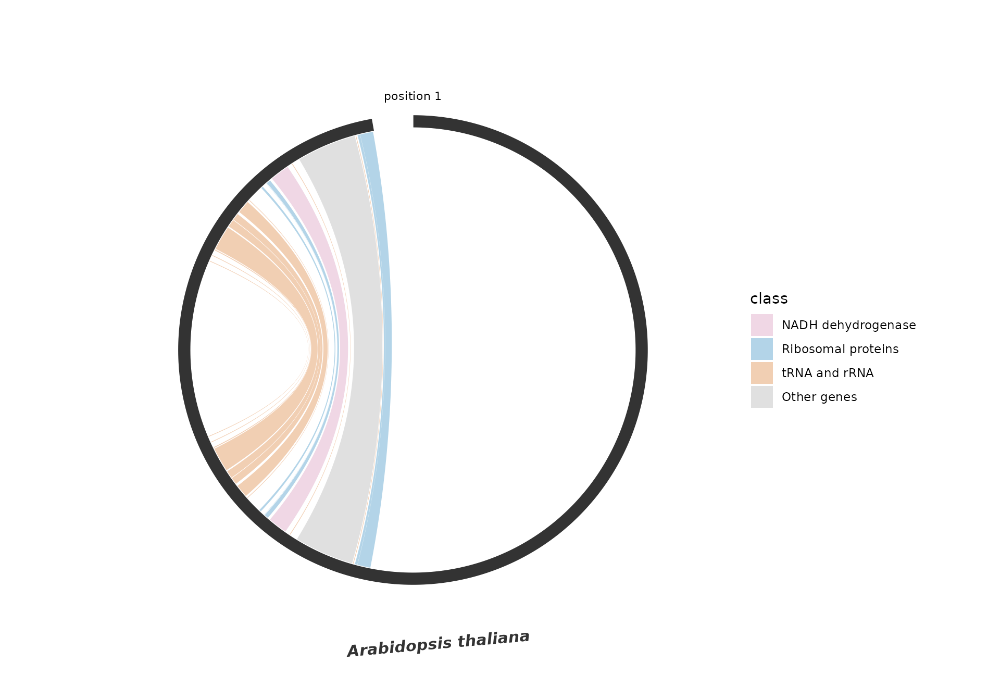
Design references
The arrangements were informed by gbdraw and the circlize chord-diagram guide. This implementation uses ggplot2’s extension mechanism, with polygon layers and a separate continuous aesthetic for every track. Neither gbdraw nor circlize is a dependency. Existing plotting calls and the 32 ltc palette definitions are unchanged.